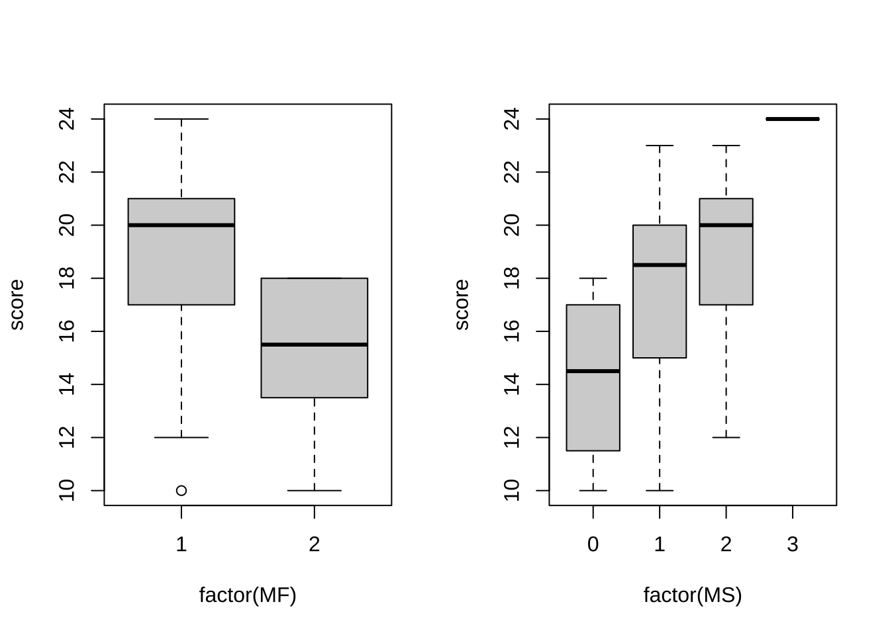
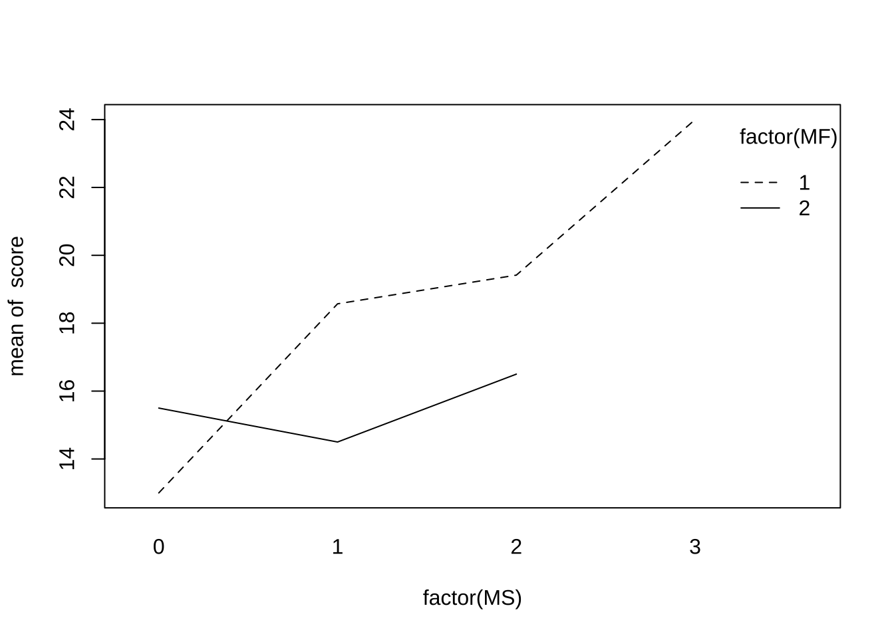

4 分散分析 (ANOVA)
4.1 1元配置ANOVA
# 仮想データセットの作成 (数値例1) グループ数: k=3
k <- 3
ttt1 <- c(8, 7, 9, 6, 8)
ttt2 <- c(7, 5, 4)
ttt3 <- c(6, 2, 1, 3)
# 縦型に整形
dat1 <- data.frame(grp = c(rep("ttt1", length(ttt1)), rep("ttt2", length(ttt2)),
rep("ttt3", length(ttt3))), resp = c(ttt1, ttt2, ttt3))
# ANOVAの実行
res_aov <- aov(resp ~ grp, data = dat1)
# 実行結果の表示
summary(res_aov)
#> Df Sum Sq Mean Sq F value Pr(>F)
#> grp 2 47.13 23.567 8.887 0.0074 **
#> Residuals 9 23.87 2.652
#> ---
#> Signif. codes: 0 '***' 0.001 '**' 0.01 '*' 0.05 '.' 0.1 ' ' 1# 確認用 (飛ばしてOK)
library(tidyverse)
# 全体平方和 (SST) の計算
avg <- mean(dat1$resp) # 全体平均
# (mean(dat1$resp^2) - avg^2) * length(dat1$resp)
sst <- sum((dat1$resp - avg)^2) # 全体平方和
# 群内平方和 (SSW) の計算 (※) 発展的なコード library(tidyverse)
ssw_j <- dat1 %>%
group_by(grp) %>%
summarize(ssq = (mean(resp^2) - mean(resp)^2) * length(resp))
ssw <- sum(ssw_j$ssq) # 群内平方和
# 群間平方和 (SSB) の計算
n_vec <- c(length(ttt1), length(ttt2), length(ttt3))
avg_j <- dat1 %>%
group_by(grp) %>%
summarize(avg = mean(resp))
ssb <- sum((avg_j$avg - avg)^2 * n_vec) # 群間平方和
# または,
ssb <- sst - ssw # 群間平方和
# 自由度 (df) SST: length(dat1$resp) - 1, SSB: K - 1, SSW: length(dat1$resp) -
# K
# 平均平方和の計算
msb <- ssb/(k - 1)
msw <- ssw/(length(dat1$resp) - k)
# F値の計算
f_val <- msb/msw
# p値の計算
pf(f_val, k - 1, length(dat1$resp) - k, lower.tail = F)
#> [1] 0.0074028744.2 2元配置ANOVA
# 仮想データセットの作成 (数値例2)
fctA_val <- c("a1", "a2", "a3", "a4")
fctB_val <- c("b1", "b2", "b3")
val <- matrix(c(8, 7, 6, 7, 5, 2, 6, 4, 3, 8, 6, 2), nrow = 4, byrow = T)
colnames(val) <- fctB_val
rownames(val) <- fctA_val
dat2 <- as.data.frame(val) %>%
rownames_to_column(var = "fctA") %>%
pivot_longer(cols = b1:b3, names_to = "fctB", values_to = "resp") %>%
data.frame()
# SST sum((val - mean(val))^2)
# ANOVAの実行
res_aov <- aov(resp ~ fctA + fctB, data = dat2)
# 実行結果の表示
summary(res_aov)
#> Df Sum Sq Mean Sq F value Pr(>F)
#> fctA 3 12.67 4.222 4.343 0.05988 .
#> fctB 2 32.17 16.083 16.543 0.00362 **
#> Residuals 6 5.83 0.972
#> ---
#> Signif. codes: 0 '***' 0.001 '**' 0.01 '*' 0.05 '.' 0.1 ' ' 1
# interactionなし res_aov <- aov(resp ~ fctA * fctB, data = dat2)
# summary(res_aov)4.3 分析例
データ1: 2業種口コミサイト(仮想データ)
t検定と結果の比較を行う.
- データの読み込み, 並べ替え
x <- read.csv("dat_1-1.csv")
# 口コミサイト(仮想データ) 2つの業種(A, B), 各20社
# 各企業に対する(元)従業員による平均評価点(1--5)
head(x)
#> A B
#> 1 2.257 4.065
#> 2 4.273 4.771
#> 3 4.205 2.793
#> 4 3.251 3.003
#> 5 1.534 3.250
#> 6 3.327 3.390
# xの整形 (横型 → 縦型)
xvec <- as.vector(as.matrix(x)) # xをベクトル化
yvec <- c(rep("A", 20), rep("B", 20))
xdf <- data.frame(score = xvec, type = yvec)
str(xdf)
#> 'data.frame': 40 obs. of 2 variables:
#> $ score: num 2.26 4.27 4.21 3.25 1.53 ...
#> $ type : chr "A" "A" "A" "A" ...
xdf$score
#> [1] 2.257 4.273 4.205 3.251 1.534 3.327 3.596 3.421 2.544 2.110 2.262 2.550
#> [13] 2.790 2.033 3.688 3.440 3.797 3.644 2.906 1.230 4.065 4.771 2.793 3.003
#> [25] 3.250 3.390 2.834 2.171 4.654 3.051 4.789 4.373 3.325 3.028 4.127 2.796
#> [37] 2.015 4.379 3.380 3.793
xdf[, "score"]
#> [1] 2.257 4.273 4.205 3.251 1.534 3.327 3.596 3.421 2.544 2.110 2.262 2.550
#> [13] 2.790 2.033 3.688 3.440 3.797 3.644 2.906 1.230 4.065 4.771 2.793 3.003
#> [25] 3.250 3.390 2.834 2.171 4.654 3.051 4.789 4.373 3.325 3.028 4.127 2.796
#> [37] 2.015 4.379 3.380 3.793
xdf[, 1]
#> [1] 2.257 4.273 4.205 3.251 1.534 3.327 3.596 3.421 2.544 2.110 2.262 2.550
#> [13] 2.790 2.033 3.688 3.440 3.797 3.644 2.906 1.230 4.065 4.771 2.793 3.003
#> [25] 3.250 3.390 2.834 2.171 4.654 3.051 4.789 4.373 3.325 3.028 4.127 2.796
#> [37] 2.015 4.379 3.380 3.793
# 代替的方法 stack(x)
## library(tidyverse) gather関数(横型→縦型), spread関数(縦型→横型)- 1元ANOVAの実行
# 1元ANOVA
attach(xdf)
res_aov <- aov(score ~ type)
summary(res_aov)
### 代替アプローチ (1)
oneway.test(score ~ type)
# デフォルト：等分散を仮定しない
oneway.test(score ~ type, var.equal = T)
# 等分散を仮定
### 代替アプローチ (2)
res_lm <- lm(score ~ type)
res_anova <- anova(res_lm)
res_anova # summary()を使わずに出力
detach(xdf)
# 等分散検定
var.test(x$A, x$B)
boxplot(x)
# t検定との比較
t.test(x$A, x$B)
t.test(x$A, x$B, var.equal = T)
## t.test(x$A, x$B, paired=T)データ2: 統計小テストデータ
year(学年), MF(性別:男性1女性2), AS(文理:文系1その他2理系3), math(数学履修年数), work(勤務年数), stat(統計学経験0-2), MS(経営科学好き嫌い0-3), s4(4級相当得点), s3(3級相当得点), s2(2級相当得点)testdat <- read.csv("BS_stattest.csv", header = F)
colnames(testdat) <- c("year", "MF", "AS", "math", "work", "stat", "MS", "s4", "s3",
"s2")
# 総合得点の計算, 列に追加
score <- apply(testdat[, c("s4", "s3", "s2")], 1, sum)
testdat2 <- cbind(testdat, score)
# モダンな方法 library(tidyverse) testdat2 <- testdat %>% mutate(score = s4 +
# s3 + s2)
str(testdat2)
#> 'data.frame': 37 obs. of 11 variables:
#> $ year : int 1 1 1 1 1 1 1 1 1 1 ...
#> $ MF : int 1 1 1 1 2 1 1 1 1 1 ...
#> $ AS : int 1 2 1 1 1 1 1 1 1 3 ...
#> $ math : int 13 6 8 7 5 5 5 6 8 10 ...
#> $ work : int 7 6 4 4 1 5 4 7 0 8 ...
#> $ stat : int 1 0 1 0 0 0 0 0 0 0 ...
#> $ MS : int 2 3 1 1 1 1 0 1 1 2 ...
#> $ s4 : int 7 8 7 7 7 5 5 7 8 7 ...
#> $ s3 : int 8 8 6 9 5 8 3 7 6 8 ...
#> $ s2 : int 7 8 6 7 4 7 2 6 7 5 ...
#> $ score: int 22 24 19 23 16 20 10 20 21 20 ...
# → 得点以外の変数も数値(整数)で入力されている
# 分割表(クロス集計表)
table(testdat2[, c("MF", "AS")])
#> AS
#> MF 1 2 3
#> 1 17 3 9
#> 2 4 1 3
# 相関係数
cor(testdat2[, c("math", "s2")])
#> math s2
#> math 1.00000000 0.04241976
#> s2 0.04241976 1.00000000
cor(testdat2[, c("MS", "s4", "s3", "s2")])
#> MS s4 s3 s2
#> MS 1.0000000 0.2592955 0.4922877 0.2600562
#> s4 0.2592955 1.0000000 0.1315443 0.1245631
#> s3 0.4922877 0.1315443 1.0000000 0.6435060
#> s2 0.2600562 0.1245631 0.6435060 1.0000000
cor(testdat2[, c("MS", "math")])
#> MS math
#> MS 1.0000000 0.2864297
#> math 0.2864297 1.0000000
# 箱ひげ図
attach(testdat2)
par(mfrow = c(1, 2))
boxplot(score ~ factor(MF)) # 2-level factor
boxplot(score ~ factor(MS)) # 4-level factor
aaa <- table(testdat2[, c("MF", "AS")])
chisq.test(aaa)
#>
#> Pearson's Chi-squared test
#>
#> data: aaa
#> X-squared = 0.18986, df = 2, p-value = 0.9094
aaa <- table(testdat2[, c("MS", "AS")])
chisq.test(aaa)
#>
#> Pearson's Chi-squared test
#>
#> data: aaa
#> X-squared = 16.044, df = 6, p-value = 0.01352- 1元ANOVA
# 1-way ANOVA
summary(aov(score ~ factor(MS)))
#> Df Sum Sq Mean Sq F value Pr(>F)
#> factor(MS) 3 108.2 36.07 3.282 0.0329 *
#> Residuals 33 362.7 10.99
#> ---
#> Signif. codes: 0 '***' 0.001 '**' 0.01 '*' 0.05 '.' 0.1 ' ' 1
# 代替的アプローチ
anova(lm(score ~ factor(MS)))
#> Analysis of Variance Table
#>
#> Response: score
#> Df Sum Sq Mean Sq F value Pr(>F)
#> factor(MS) 3 108.22 36.074 3.2817 0.03293 *
#> Residuals 33 362.75 10.992
#> ---
#> Signif. codes: 0 '***' 0.001 '**' 0.01 '*' 0.05 '.' 0.1 ' ' 1- 2元ANOVA

summary(aov(score ~ factor(MS) + factor(MF))) # 主効果項のみ (交互作用項なし)
#> Df Sum Sq Mean Sq F value Pr(>F)
#> factor(MS) 3 108.2 36.07 3.571 0.0246 *
#> factor(MF) 1 39.5 39.49 3.909 0.0567 .
#> Residuals 32 323.3 10.10
#> ---
#> Signif. codes: 0 '***' 0.001 '**' 0.01 '*' 0.05 '.' 0.1 ' ' 1
summary(aov(score ~ factor(MS) * factor(MF))) # 交互作用項有
#> Df Sum Sq Mean Sq F value Pr(>F)
#> factor(MS) 3 108.22 36.07 3.727 0.0217 *
#> factor(MF) 1 39.49 39.49 4.080 0.0524 .
#> factor(MS):factor(MF) 2 32.92 16.46 1.701 0.1997
#> Residuals 30 290.35 9.68
#> ---
#> Signif. codes: 0 '***' 0.001 '**' 0.01 '*' 0.05 '.' 0.1 ' ' 1
# 代替的アプローチ
anova(lm(score ~ factor(MS) + factor(AS))) # 主効果項のみ (交互作用項なし)
#> Analysis of Variance Table
#>
#> Response: score
#> Df Sum Sq Mean Sq F value Pr(>F)
#> factor(MS) 3 108.22 36.074 3.3147 0.03267 *
#> factor(AS) 2 25.38 12.689 1.1659 0.32493
#> Residuals 31 337.37 10.883
#> ---
#> Signif. codes: 0 '***' 0.001 '**' 0.01 '*' 0.05 '.' 0.1 ' ' 1
anova(lm(score ~ factor(AS) + factor(MS))) # 分解順の影響
#> Analysis of Variance Table
#>
#> Response: score
#> Df Sum Sq Mean Sq F value Pr(>F)
#> factor(AS) 2 3.50 1.748 0.1607 0.85229
#> factor(MS) 3 130.10 43.368 3.9849 0.01642 *
#> Residuals 31 337.37 10.883
#> ---
#> Signif. codes: 0 '***' 0.001 '**' 0.01 '*' 0.05 '.' 0.1 ' ' 1
anova(lm(score ~ factor(MS) * factor(AS))) # 交互作用項有
#> Analysis of Variance Table
#>
#> Response: score
#> Df Sum Sq Mean Sq F value Pr(>F)
#> factor(MS) 3 108.22 36.074 3.3063 0.03397 *
#> factor(AS) 2 25.38 12.689 1.1629 0.32672
#> factor(MS):factor(AS) 2 20.96 10.478 0.9603 0.39460
#> Residuals 29 316.42 10.911
#> ---
#> Signif. codes: 0 '***' 0.001 '**' 0.01 '*' 0.05 '.' 0.1 ' ' 1
lm(score ~ factor(MS) + factor(MF))
#>
#> Call:
#> lm(formula = score ~ factor(MS) + factor(MF))
#>
#> Coefficients:
#> (Intercept) factor(MS)1 factor(MS)2 factor(MS)3 factor(MF)2
#> 15.552 2.693 3.820 8.448 -2.604
detach(testdat2)- (自主課題) 対応のある分散分析の実行: 山田・杉澤・村井 (2008)『Rによるやさしい統計学』「第7章 分散分析」を参照せよ.
データ3: 経営科学アンケート
グループ(group), 負荷(workload), 難易度(difficulty), 有用性(usefulness), 貢献度(contribution), 数学スキル(Math), エクセルスキル(Excel), 文理(AS), 業務経験(Work), 性別(MF)testdat <- read.csv("FB_dist.csv", header = T)
attach(testdat)
# 実行1
aov(difficulty ~ Math)
#> Call:
#> aov(formula = difficulty ~ Math)
#>
#> Terms:
#> Math Residuals
#> Sum of Squares 20.02254 52.62250
#> Deg. of Freedom 1 113
#>
#> Residual standard error: 0.6824118
#> Estimated effects may be unbalanced
# anova(lm(difficulty ~ Math))
# 実行2
aov(difficulty ~ factor(Math))
#> Call:
#> aov(formula = difficulty ~ factor(Math))
#>
#> Terms:
#> factor(Math) Residuals
#> Sum of Squares 21.81657 50.82847
#> Deg. of Freedom 4 110
#>
#> Residual standard error: 0.6797624
#> Estimated effects may be unbalanced
# anova(lm(difficulty ~ factor(Math)))
detach(testdat)- (自主課題) 対応のある分散分析の実行を試みよ.